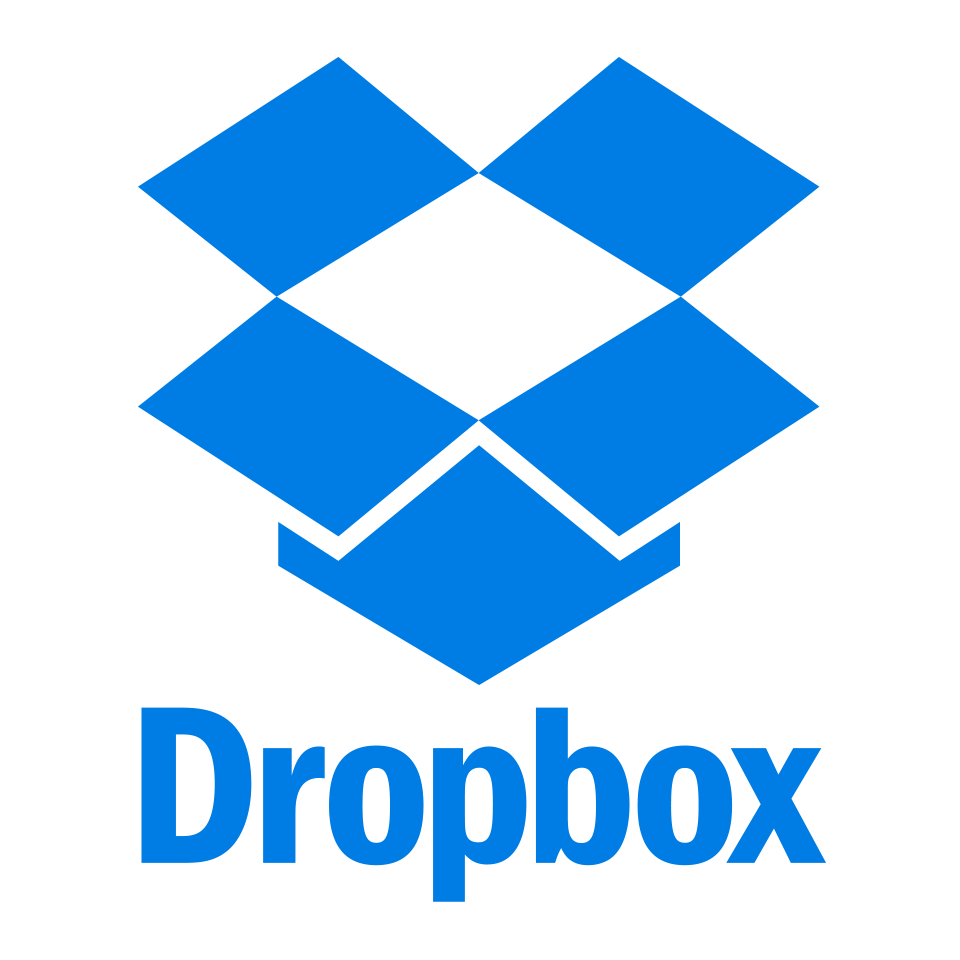

Alguns serviços grátis de armazenamento em nuvem
Google Drive
OneDrive
DropBox
Conheça agora:
- Serviço de armazenamento em nuvem do Google.
- Assim que o usuário cria um email no Gmail, já consegue acesso ao Google Drive.
- Acesso ao serviço de armazenamento em nuvem sem pagar nada por ele.
- 15 GB de espaço gratuitos para usar. É possível expandir essa quantidade assinando planos mensais (100 GB por R$ 6,99 ou 1TB por R$ 34,99).
- Alta compatibilidade com sistemas operacionais para desktops e (Windows, Mac, Linux) e dispositivos móveis (iOS e Android).
- Segurança no acesso atrelado à conta primária do usuário, que pode definir permissões de compartilhamento com outros usuários.
- Acesso aos arquivos armazenados em qualquer hora, de qualquer lugar, de forma simples e intuitiva. O usuário apenas precisa estar conectado à internet para acessar as últimas atualizações.
- Possibilidade de se editar arquivos offline. As alterações são feitas sem problemas e, quando o usuário se conectar à internet, as atualizações são feitas automaticamente.

- É o serviço de armazenamento em nuvem da Microsoft.
- O serviço é gratuito para usar a partir da adesão do usuário ao pacote Office.
- Oferece editores de textos, planilhas, apresentações e acesso a projetos colaborativos pela internet.
- 5 GB de espaço gratuito para usar. Essa quantidade pode sear expandida para 50 GB, 1TB e 5TB dependendo do tipo de plano que o usuário pagar. Os preços variam de R$ 7 a R$ 29 mensais.
- Compatível com sistemas operacionais para desktops e dispositivos móveis.
- É possível criar e editar arquivos do pacote Office sem precisar estar conectado à internet. Quando o usuário ficar online, as alterações são atualizadas automaticamente.
- Arquivos podem ser acessados de qualquer lugar, a qualquer hora e de qualquer dispositivo compatível. Não requer instalação no dispositivo do usuário.

- Com apenas um registro, o usuário tem acesso a uma conta gratuita e já pode começar a guardar seus arquivos, dados e informações em um servidor online sem custos extras.
- 2 GB de espaço gratuito para usar. O usuário pode assinar planos que oferecem de 1 TB de espaço até o ilimitado necessário. Os preços chegam a até US$ 20 (cerca de R$ 67) mensais, dependendo do pacote contratado.
- Planos e recursos personalizados para pessoas físicas e grupos empresariais profissionais.
- Acesso aos arquivos armazenados de qualquer lugar, hora e dispositivo (seja desktop ou móvel) e sem a necessidade de internet. As alterações nos projetos são atualizadas quando o usuário de conectar à rede.
- Gerenciamento de projetos por vários usuários simultâneos, com a possibilidade de recuperar datd dos e arquivos excluídos acidentalmente.
- Todos os planos contam com um sistema de segurança avançado, que inclui uma infraestrutura de criptografia de dados e verificação em duas etapas no acesso aos arquivos.
- Para usar, basta criar uma conta de acesso que logo o usuário já poderá guardar e compartilhar arquivos, documentos e pastas em um servidor online.
- 50 GB de espaço gratuito para usar como quiser. Se preferir, é possível assinar planos mensais que oferecem até 8 TB de armazenamento por preços que chegam a 130 reais
- Compatibilidade com sistemas operacionais para desktops (Windows, Mac e Linux) e dispositivos móveis (Android e iOS).
- Sistema de criptografia automática para proteção de dados. Apenas os usuários proprietários dos arquivos podem acessar, editar ou excluir.
- Gerenciador de arquivos com sincronização de todos os dados armazenados em nuvem ou de caminhos de sincronização seletiva entre pastas e diretórios.
- Acelerador de download e upload embutido, que funciona sem a necessidade de instalar aplicativos.
- É o serviço de armazenamento na nuvem gratuito da Apple.
- 5 GB de espaço gratuito para usar. Se preferir, o usuário pode aderir aos planos pagos, que oferecem até 2 TB de armazenamento por até R$ 29,90 mensais.
- Planos simples para usuários únicos e projetos iniciantes e contas familiares com até 5 usuários conectados e projetos colaborativos.
- Sincronização de dados e backups automáticos não só de documentos, arquivos, fotos e vídeos, mas também de documentos, contatos, agendas e aplicativos.
- Compatível com dispositivos eletrônicos da Apple que se conectam à internet. Inclui as linhas de computadores e notebooks, iPhone, iPad e iPod Touch. Também pode ser usado no Windows.
- Sistema de criptografia de proteção dos dados do usuário, em que apenas o donos dos arquivos armazenados em nuvem pode acessar e mexer neles como quiser.